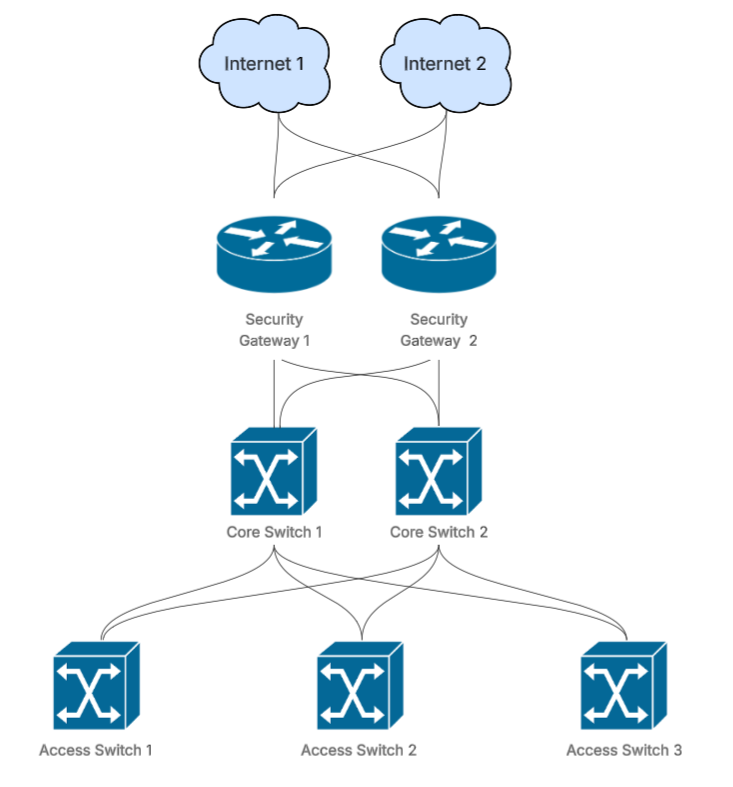
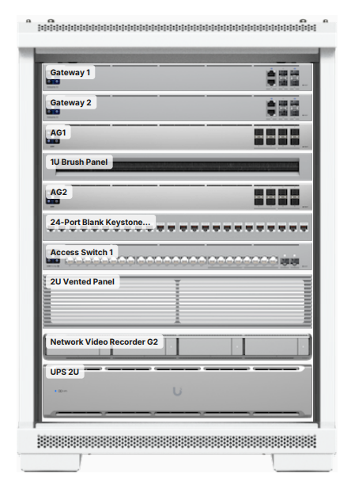
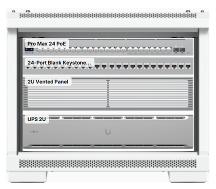

PROJECT 01 / NETWORKING
Industrial Environment Network
An architecture for a ~30 user manufacturing and distribution environment, designed around segmentation, reliability, security, and maintainability.
Design goals
Create a resiliant network supporting users with primarily wireless devices that are mobile across the entirity of the factory.
Implementation
To effectivly address the client's needs, the following architecture was chosen. A dual-WAN setup was chosen to account for ISP outages. Two HA VRRP security gateways gives allows for routing and ngfw redundancy as well. Two core switches comprise the core layer, which feeds 3 access switches via aggregated links, chosen primarily for redundancy over the bandwidth benefit. One consideration was that this did leave each individual access layer switch as a single point of failure. To compensate, a cold spare was made available. The access switches supported a deployment of access points across the building along with cameras, phones, and a small number of other devices requiring a wired connection. IP schemes were chosen to allow for segmentation of the network, utilizing the zone-based firewall features of the security gateways.

PHYSICAL INFRASTRUCTURE
Network Infrastructure
Physical infrastructure of MDF and IDFs.


VLAN plan, altered from actual internal IPs at deployment
| VLAN | Purpose | Subnet |
|---|---|---|
| 10 | Management | 10.0.10.0/24 |
| 12 | Servers | 10.0.12.0/24 |
| 20 | Users | 10.0.20.0/24 |
| 30 | Voice | 10.0.30.0/24 |
| 40 | Cameras | 10.0.40.0/24 |
| 50 | Guest | 10.0.50.0/24 |
| 60 | Legacy | 10.0.60.0/24 |